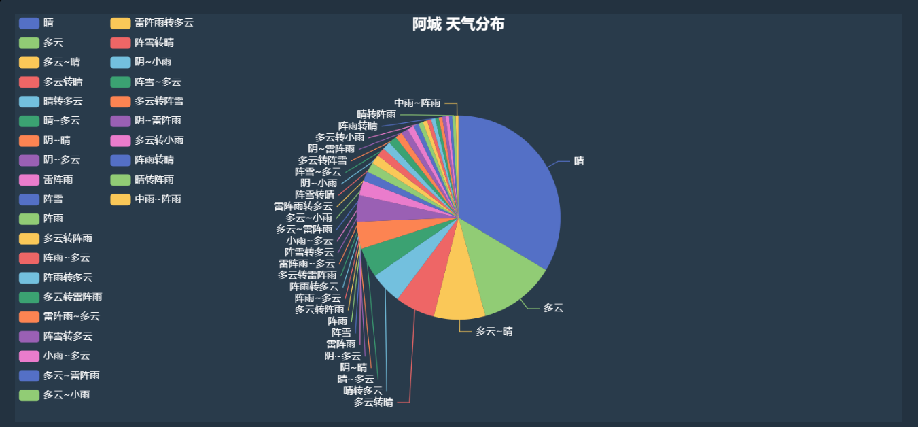
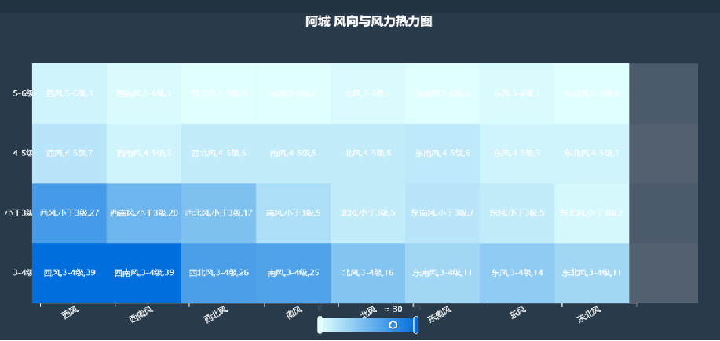

项目详情
多源气象数据可视化分析平台
项目简介
构建多源气象数据可视化平台，整合历史数据与实时数据，覆盖实时天气查询、历史气象查询、生活指数和灾害预警等模块。 前端使用 Vue3，后端使用 SpringBoot 与 MySQL，并结合 ECharts 完成多维数据展示。



技术栈
前端：Vue3、HTML5、CSS3、JavaScript
后端：SpringBoot、MySQL
图表：ECharts
主要职责
- 爬取中国气象局数据，整理出 30 万条历史记录，包括城市、日期、最高气温、最低气温与风向信息。
- 结合高德地图与天气接口获取实时天气、生活指数和灾害预警，并使用 ECharts 实现折线图、饼图、热力图和雷达图等展示。
- 使用 SpringBoot 与 MySQL 完成登录注册、历史数据持久化以及检索能力。